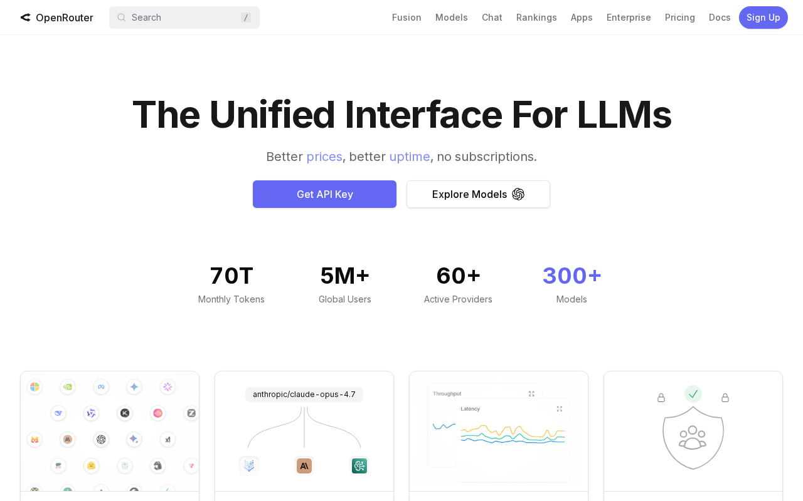
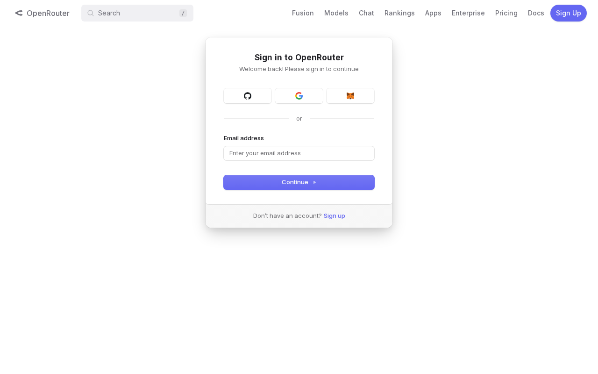
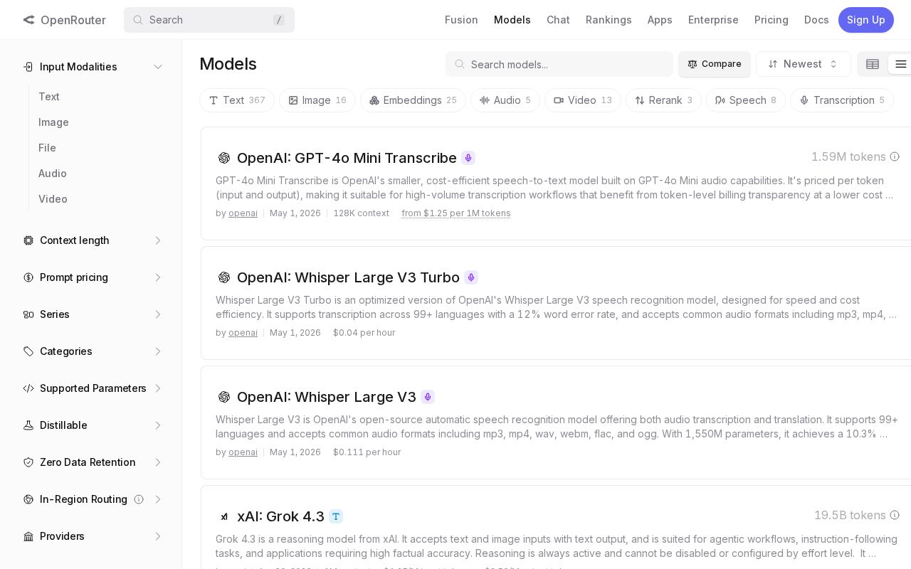
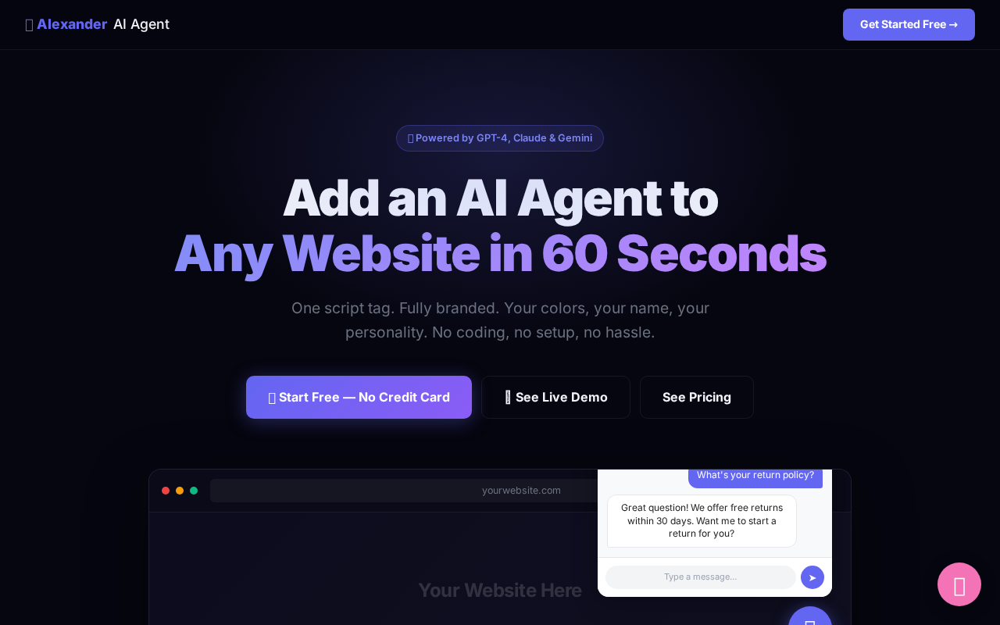

What You'll Do In This Lesson
Follow each step exactly as shown. Every screenshot is taken from the real app you'll be using. By the end of this lesson, you'll have completed the action shown in the title above.
Step 1: Go to OpenRouter.ai
OpenRouter is the gateway to every major AI model — GPT-4, Claude, Gemini, and more.
Step 1: OpenRouter Homepage

OpenRouter is the service that powers your AI agents. Think of it as the electricity for your agents — without it, they don't run. The good news: getting set up is free and takes about 3 minutes. Click 'Sign In' in the top right.
Step 2: Create Your Account
Sign up for OpenRouter.
Step 2: Sign Up Page

Click 'Sign Up' and create your account. You can use Google, GitHub, or your email. Once signed in, you'll be taken to your dashboard. We need one thing from here: your API key.
Step 3: Get Your API Key
Navigate to the API keys section.
Step 3: The API Keys Page

This is the API Keys page. Click '+ Create Key'. Give it a name like 'My First Agent' and click Create. You'll see a long string starting with sk-or-v1-... — that's your key. COPY IT NOW and save it somewhere safe (a notes app or password manager). You only see it once.
Step 4: Browse the Available Models
See which AI models you can use with your key.
Step 4: All the AI Models Available to You

With your OpenRouter key, you have access to ALL of these models. GPT-4o, Claude 3.5, Gemini, Llama, Mistral — everything. Many have free tiers. We'll start with GPT-4o Mini for your agent — it's fast, cheap, and excellent for customer conversations. You can switch models any time without changing your agent's code.
Step 5: Back to Agent Widget — You're Ready
With your API key in hand, you're ready to create your first agent.
Step 5: You Have Everything You Need

You now have: (1) an OpenRouter account, (2) an API key copied and saved, (3) access to every major AI model. Head to the Agent Widget and let's build your first agent in the next lesson.